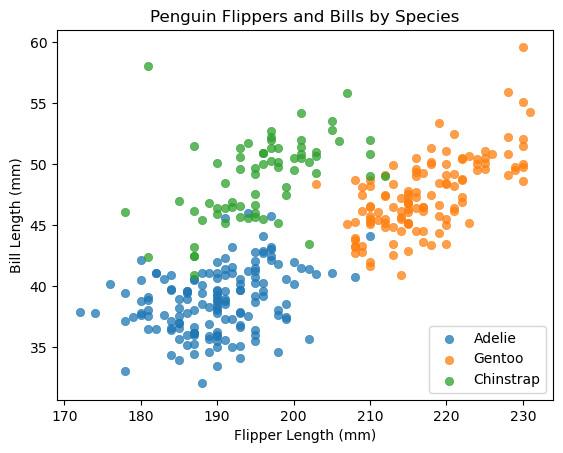

If you want to discover why things happen, and prove a case with data, this is the path for you. Inference Data Scientists design experiments, test hypotheses, and conduct causal inference in order to figure out what factors are driving outcomes. This Career Path will teach you to do just that, and along the way, you’ll build portfolio-worthy projects that will help you get job-ready.
Calculating Churn Rate using SQL
Churn rate is the percent of subscribers to a monthly service who have canceled. For example, in January, let’s say Codecademy had 1,000 learners. In February, 200 learners sign up, and 250 cancel.
Write an SQL query to calculate the churn rate for March 2017:
churn_rate_march17.JPG
Q. What recommendations would you make based on this analysis?
The opposite of churn rate is usually referred to as the retention rate. The calculation for churn and retention can vary on the implementation, but usually the calculation is
retention rate = 100% - churn rate
Further analysis & visualization
After interacting with the database, it is time to analyze the data further and eventually visualize the data. And SQL cannot get us there.
Python is a general-purpose programming language. It can do almost all of what other languages can do with comparable, or faster, speed. It is often chosen by Data Analysts and Data Scientists for prototyping, visualization, and execution of data analyses on datasets.
There’s an important question here. Plenty of other programming languages, like R, can be useful in the field of data science. Why are so many people choosing Python?
One major factor is Python’s versatility. There are over 125,000 third-party Python libraries. These libraries make Python more useful for specific purposes, from the traditional (e.g. web development, text processing) to the cutting edge (e.g. AI and machine learning). For example, a biologist might use the Biopython library to aid their work in genetic sequencing.
Additionally, Python has become a go-to language for data analysis. With data-focused libraries like pandas, NumPy, and Matplotlib, anyone familiar with Python’s syntax and rules can use it as a powerful tool to process, manipulate, and visualize data.
libraries = ["NumPy", "SciPy", "Pandas", "Matplotlib", "Seaborn"] # list (iterable)completion = [100, 100, 96, 0, 0] # list (iterable)libraries.append("scikit-learn") # add scikit-learn to the libraries listcompletion.append(0) # add 0 to the completion list# zip function takes two or more iterable arguments and returns an iterator that generates tuples (pair values - immutable)# containing elements from the input iterables, element-wiseprint("Lesson Completion Rates:")print(gradebook)print("\n")
Lesson Completion Rates:
NameError: name 'gradebook' is not defined
Analyzing Data with Pandas
Python is a programming language, and pandas is a special set of commands in Python that lets us analyze spreadsheet data. Pandas can do a lot of the things that SQL can do, but it’s also backed by the power of Python, so we can easily transition from analyzing our data with pandas to visualizing it using other Python tools.
page_visits.JPG
Visualizing Data with Matplotlib and Seaborn
Matplotlib lets you create line charts, bar charts, pie charts, and more. It gives you precise control over colors and labels so that you can create the perfect chart to communicate your findings.
#import codecademylib3_seabornfrom matplotlib import pyplot as pltimport numpy as npimport pandas as pdhour =range(24) # 0 to 23 - exclusive and indexing starts at 0 in Pythonviewers_hour = [30, 17, 34, 29, 19, 14, 3, 2, 4, 9, 5, 48, 62, 58, 40, 51, 69, 55, 76, 81, 102, 120, 71, 63]plt.title("Codecademy Learners Time Series")plt.xlabel("Hour")plt.ylabel("Viewers")plt.plot(hour, viewers_hour)plt.legend(['2015-01-01'])ax = plt.subplot()ax.set_facecolor('seashell') # cosmeticsax.set_xticks(hour) # set the markers on the x-axisax.set_yticks([0, 20, 40, 60, 80, 100, 120]) # set the markers on the y-axisy_upper = [i + (i*0.15) for i in viewers_hour] # define 15% buffer ABOVE viewer hoursy_lower = [i - (i*0.15) for i in viewers_hour] # define 15% buffer BELOW viewer hoursplt.fill_between(hour, y_lower, y_upper, alpha=0.2) # fill the buffer zone as defined aboveplt.show() # create and display the plot
Probability
Calculating the probability of an event is sometimes dependent on external factors. For instance, in the birthday problem “What is the probability that two people in a room have the same birthday?” the probability is dependent on the number of people in the room :
simulate.py
import random#Simulate a room with a certain number of peopledef simulate(num_people): birthdays = []print("Here's what our room looks like:\n") months = ["January", "February", "March", "April", "May", "June", "July", "August", "September", "October", "November", "December"]#Assign a random birthday to each personfor i inrange(0, num_people):#Choose a random month month_choice = random.choice(months)#Choose a random day based on monthif month_choice =="February": day = random.randint(1, 29)elif month_choice =="April"or month_choice =="June"or month_choice =="September"or month_choice =="November": day = random.randint(1, 30)else: day = random.randint(1, 31) birthday = month_choice +" "+str(day)#Store the birthday birthdays.append(birthday)print("Person {0}'s birthday: {1}".format(i +1, birthday)) calculate_probability(num_people) match =False#Check for matching birthdaysfor i inrange(len(birthdays)):if find_duplicates(birthdays, birthdays[i], i): match =Truebreakifnot match:print("\n\nIn our simulation, no two people have the same birthday")#Calculate the probability of there being 2 people with the same birthdaydef calculate_probability(num_people):#Check there is at least 2 people in the roomif num_people <2:print("\n\nNot enough people in the room!")returnelse:#Calculate the probability numerator =365 countdown =364for i inrange(2, num_people +1): numerator = numerator * countdown countdown -=1 denominator =365** num_people probability =1- numerator/float(denominator)#Change probability to percentage rounded =round(probability*100, 2)print("\n\nThe probability that two people in a room of {0} people have the same birthday is nearly {1}%".format(num_people, rounded))#Find the same birthday within our list of birthdaysdef find_duplicates(birthdays_list, birthday, index): people = []for i inrange(len(birthdays_list)):if birthdays_list[i] == birthday and i != index: people.append(i +1)if people: people.append(index +1)print("\n\nIn our simulation, the following people have the same birthdays: ")for person in people:print("Person {0}".format(person))returnTrueelse:returnFalse
Other times, the probability of something is constant. For instance, the probability of flipping a coin and it landing heads will always be 50%.
In data science, probability is often used to simulate scenarios.
# from simulate import simulate # import the function named simulate from simulate.pynum_people_in_room =13# Change this number (keep it smaller than 100 to save processing power)simulate(num_people_in_room)
Here's what our room looks like:
Person 1's birthday: May 30
Person 2's birthday: September 27
Person 3's birthday: December 22
Person 4's birthday: November 4
Person 5's birthday: October 14
Person 6's birthday: August 9
Person 7's birthday: November 19
Person 8's birthday: August 31
Person 9's birthday: June 27
Person 10's birthday: October 24
Person 11's birthday: December 8
Person 12's birthday: May 6
Person 13's birthday: January 13
The probability that two people in a room of 13 people have the same birthday is nearly 19.44%
In our simulation, no two people have the same birthday
Statistical Inference
A lot of statistics is based on the idea of a distribution. Let’s apply this to look at the distribution of learner hours on the Codecademy site.
There are many different types of distributions. The one below is called a normal distribution :
normal_distribution.JPG
These distributions are very common. In a normal distribution, the mean is the middle of the distribution and the standard deviation is the width.
Increasing the mean, shifts the entire distribution to the right.
normal_distribution_mean3.JPG
Increasing the standard deviation, squashes (flattens) the distribution.
normal_distribution_sd3.JPG
Machine Learning
Machine Learning and Algorithms teams use data to make predictions and create new products using data (like recommendation systems). Today they are trying to find trends among millions of learners according to their behavior on the site. They will use a cluster analysis.
Catherine is playing around with some sample data about penguins to learn about cluster analyses.
# Import libraries for making and displaying figuresimport matplotlib.pyplot as plt#import codecademylib3_seabornimport pandas as pd# Load the three penguin species dataadelie = pd.read_csv('data/adelie.csv')adelie['Species'] ='Adelie'gentoo = pd.read_csv('data/gentoo.csv')gentoo['Species'] ='Gentoo'chinstrap = pd.read_csv('data/chinstrap.csv')chinstrap['Species'] ='Chinstrap'# Combine the three datasets into one and select relevant columnspenguins = pd.concat([adelie,gentoo,chinstrap])[['Species','Flipper Length (mm)','Culmen Length (mm)']]# Rename the columns for ease of usepenguins.columns = ['Species','Flipper Length','Bill Length']# Create and label the scatterplotsfor penguin in ['Adelie','Gentoo','Chinstrap']: plt.scatter(penguins[penguins['Species'] == penguin]['Flipper Length'],penguins[penguins['Species']==penguin]['Bill Length'],alpha=.75,linewidths=.5,label=penguin)plt.legend()plt.xlabel('Flipper Length (mm)')plt.ylabel('Bill Length (mm)')plt.title('Penguin Flippers and Bills by Species')
Text(0.5, 1.0, 'Penguin Flippers and Bills by Species')

Take a look at the visualization above. You might notice that there isn’t much overlap between species on the plot. For example, Chinstrap penguins seem to usually have longer bills than Adelie penguins, and so Chinstrap penguins appear above Adelie penguins in the visualization. Regions like these that mostly feature one species over another are called clusters.
We can use this to make predictions. For example, if we find a new penguin that has 180mm long flippers and a 35mm long bill, we might conclude (based on these clusters) that our penguin is more likely to be an Adelie penguin.
Let’s build a model that can make this kind of prediction automatically :
# Import a package for generating a model of a datasetfrom sklearn.cluster import KMeans# Create a model of this data using the K Means algorithmkm_model = KMeans(n_clusters =3, random_state=17).fit(penguins[['Flipper Length','Bill Length']].dropna().values)# Define a function that uses the KMeans model to predict speciesdef predict(flipper,bill):#plt.scatter(flipper,bill,marker='*',s=600,c='black') species_name = {0:'Adelie',1:'Gentoo',2:'Chinstrap'}print('Prediction: this penguin belongs to the '+ species_name[list(km_model.predict([[flipper,bill]]))[0]] +' species!') plt.show()
/home/stephen137/mambaforge/lib/python3.10/site-packages/sklearn/cluster/_kmeans.py:1412: FutureWarning: The default value of `n_init` will change from 10 to 'auto' in 1.4. Set the value of `n_init` explicitly to suppress the warning
super()._check_params_vs_input(X, default_n_init=10)
Let’s new use this model to make predictions :
# Change these numbers and run to predict species!mystery_penguin_flipper =180mystery_penguin_bill =45# The model will use those values and the dataset to predict a speciespredict(mystery_penguin_flipper,mystery_penguin_bill)
Prediction: this penguin belongs to the Chinstrap species!
Tableau
The Analytics team typically drive decision-making by summarizing data, asking good questions, and developing dashboards. They have the most contact with the people who use the data, and therefore focus a lot of attention on storytelling and clear communication.
rotten_toms.JPG
Data Types and Quality
Variable Types
In our tree census, we are collecting data about two types of variables: one that we measure (height) and one that we categorize (species).
The difference between measuring and categorizing is so important that the data itself is termed differently:
Variables that are measured are Numerical variables
Variables that are categorized are Categorical variables.
Numerical variables
Numerical variables are a combination of the measurement and the unit. Without the unit, a numerical variable is just a number.
Imagine I go into a cafe and ask the barista for 3. Three what? ☕? 🍩? 💵? Or my friend asks how far Toledo is and I say 300. 300 miles? Kilometers? Minutes? Without units, numbers don’t mean anything.
There are two ways to get a number: by counting and measuring. Counting gives us whole numbers and discrete variables. Measuring gives us potentially partial values and continuous variables.
In our tree census, we are measuring the height of our trees in feet (indicated in the variable name, ‘Height (ft)’), a continuous variable.
Categorical variables
Categorical variables describe characteristics with words or relative values.
In the tree census, trees species are described with words like London Plane, Honeylocust, or Pin Oak. This is the best description and encodes all the information we need about the species. This kind of categorical variable is a nominal variable which literally means a named value.
We also captured whether or not our trees grew alone. In our ‘Single’ variable, there were only two options: Yes and No. This is called a dichotomous variable. Dichotomous variables have only 2 logical possibilities, “on/off”, “yes/no”, “true/false”, “0/1”, there’s no middle ground and no 3rd option. If there is a logical third option, it’s not a dichotomous variable.
Finally, let’s say that we wanted to capture how “pretty” we thought each tree was. This isn’t really a thing we can measure, but we can subjectively say on a scale of 1 to 5, how pretty we think each tree is. The prettiest trees are a 5, the least pretty trees are a 1.
That ranking is inherently ordered and therefore called an ordinal variable.
Ordinal variables are really popular in survey design “on a scale of 1-5 how much do you agree with this statement?” This is called a likert scale. They also show up in the Olympics and other competitions where someone wins 1st, 2nd, or 3rd place.
Ordinal variables can get a little confusing because they are often represented as numbers. But they don’t represent measurements or counts, they represent categories. For example, let’s say an Olympian wins Gold and Bronze medals, it doesn’t make sense to say that they averaged Silver. The same is true of likert scales: there’s no average between “Very pretty” and “Pretty.”
Dealing with Messy Data
All happy datasets are alike; each unhappy dataset is unhappy in its own way.
- Leo Tolstoy (if he had written a Data Science book)
Clean datasets are all alike, but every messy dataset is messy in its own unique way. That’s why cleaning data involves a lot of critical thinking when considering the nuances of the dataset you are working with.
Fortunately, there are some patterns in what can go wrong, and the first step in cleaning data is knowing what to look for.
What is a messy dataset?
Imagine we are outside collecting the data about our trees. We have our iPad and our tape measure. Our fingers are cold, we are distracted by a beautiful bird 🦜, and we’re ready for lunch 🍕, but we just have to measure and categorize these last 3 trees. The last 3 entries look like this:
tree_census.JPG
Yikes! What a mess. But we’re hungry, so we decide to fix the issues after lunch. They never get fixed. Six weeks later, we are back at our desk ready to analyze our data. Oh no! We have over 10,000 observations and quite a few problems.
Messy Data Problems
Different problems need to be handled differently, so let’s categorize them:
Typos like Tuuullip for Tulip
Missing data like the Pin Oak (tree ID 11222) that doesn’t have a height
Inconsistent coding like the Pin Oak (tree 18564)’s Prettiness value is ‘three’ rather than ‘3’ and the Single value for all of our trees is ‘no’ rather than ‘0’.
If we don’t fix these issues, we will likely end up with problems in our analysis. For example:
Tulip trees might be divided into 2 categories
We might get an inaccurate average height for Pin Oaks because we are missing a data point
Our computer might return an error message when we try to group trees into their Prettiness value or find all of the trees that grow alone.
Finding and solving these problems requires detective work. For now, we will fix these issues manually, but know that if you work with data, you will see these issues again. We cover how to deal with these issues and more in How to Clean Data with Python and in the course of our Data Scientist Career Paths.
tree_census_dirty.JPG
For the missing data, we actually cannot know what the value should be. One best guess is to take the mean of the other Pin Oaks.
tree_census_clean.JPG
Working with Missing Data
In our dataset, we had some missing values. There are various types of “missing-ness” that affect how we treat the missing data.
If we remember when we were collecting our data, we were hungry, our fingers were cold, and we were distracted. Even though there’s a reason we didn’t enter some values (we were hungry and tired), it’s not a systemic reason. There’s no deeper meaning to why the data is missing: it just wasn’t entered properly. This kind of missing is Missing Completely at Random.
However, we don’t always know if there is a deeper meaning, so we have to treat missing data like a mystery to solve. For example, we might notice that all of the Redwood trees are missing Height values. Well, that’s interesting! We can predict if a tree is missing its Height value based on what Species it is.
More generally we can predict if one value is missing based on the value in another variable. This kind of missing is called Missing at Random. It is a confusing label because it’s not really missing at “random” in the normal meaning of the word. If we dig a little deeper into how the data was collected, we might uncover a story about the data collection or about Redwoods. For example, our tape measures might have been too short to measure them.
Finally, data can be structurally missing, meaning that we wouldn’t expect a value there to begin with. For example, let’s say we are also collecting data about fruit on our trees. Some trees will have visible fruit. For those trees, we can count how many fruits are visible. If there’s no visible fruit, we can’t count how many there are. The number of fruits will be Structurally Missing.
What should I do about missing data?
Well, for structurally missing data, we can just ignore it, we don’t expect there to be values there anyhow. For Missing at Random and Missing Completely at Random, there is an entire science behind what to do with these values. Learn more in our course on Handling Missing Data.
When trying to recover missing data or work around it, the most important thing to consider is that anything you do will affect your analysis. Once data goes missing, it can’t be recovered, so whatever decision you make becomes a part of your result and your analysis (even doing nothing will affect the analysis). Because of this, it is best practice to keep track of which values were missing just in case you ever need to revisit your data.
Missing Data - Example
tree_census_NAN.JPG
Take a look at the dataset above. The ‘Distance (ft)’ variable refers to the distance between the trees that are growing in groups.
Data is missing in many different ways. Some data is structurally missing while other data is Missing at Random or Missing Completely at Random.
Take a moment to think about the ways that the data is missing. Is there anything that you should do about the missing values?
Accuracy
Great! We collected our measurements, made decisions about handling missing data. Now we need to ask ourselves if the dataset we have really describes the world. We need to know if it is accurate. Accuracy is a measure of how well records reflect reality.
While doing some Exploratory Data Analysis you notice that the trees you measured are overall taller than the trees I measured. That’s interesting. You’re not really sure why that is, so we compare how we measured the trees.
We realize that you measured starting from the ground and I measured starting from where the roots become the trunk. It’s not a huge difference, but it’s enough to affect the accuracy of our data. The tree heights are not accurate because we don’t know how tall each tree really is. We could also say that the height variable is not reliable. Without a standard measurement unit and standard method, comparing trees, or even getting an average tree height is impossible.
Standardization is essential for accuracy – but it’s not the only way that accuracy can be compromised.
There are a lot of ways a dataset can have low accuracy, but it all comes down to the question of: “are these measurements (or categorizations) correct?” It requires a critical evaluation of your specific dataset to identify what the issues are, but there are a few ways to think about it.
First, thinking about the data against expectations and common sense is crucial for spotting issues with accuracy. You can do this by inspecting the distribution and outliers to get clues about what the data looks like.
Second, critically considering how error could have crept in during the data collection process will help you group and evaluate the data to uncover systematic inconsistencies.
Finally, identifying ways that duplicate values could have been created goes a long way towards ensuring that reality is only represented once in your data. A useful technique is to distinguish between what was human collected versus programmatically generated and using that distinction to segment the data.
Holding these perspectives in mind is important for both numeric and categorical variables. In fact, they often provide clues about each other.
As far as resolving accuracy issues, there’s no simple solutions, and every solution has to be tailored to that specific dataset. In the end, the only way to improve a dataset’s accuracy is to use real-world knowledge to be sure that the dataset reflects reality. But even then, the reason that we collect data is generally to learn something new about the world. Sometimes the data will surprise you, but distinguishing between a new finding and inaccuracy is the work of a skilled data scientist.
accuracy.JPG
Notice in the image that the measurements begin at different places. How else could inconsistencies be created during the data collection phase?
Validity
It’s not just typos, mistakes, missing data, poor measurement, and duplicated observations that make a dataset low quality. We also have to make sure that our data actually measures what we think it is measuring. This is the validity of our dataset.
Validity is a special kind of quality measure because it’s not just about the dataset, it’s about the relationship between the dataset and its purpose. A dataset can be valid for one question and invalid for another.
Let’s think again about our trees dataset. After we finished collecting the data, we thought of another question we wanted to answer: how old are our trees?
We know that you can measure the age of a tree by counting the rings, but we didn’t do that. Let’s say that we did measure the width of the tree.
We decide that since number of rings and width are related, we will use width as a proxy for the age. With that decision, we just compromised the validity of our dataset. Our data doesn’t measure age, it measures width. And even though there is a relationship between the number of rings and the width, it’s not a direct relationship and therefore cannot be substituted without affecting the validity of our dataset and measures.
Now let’s say that we want to know how much our trees grow every year. We found a dataset for the same region from 20 years ago. We use the locations to match up the old and new measurements. But this data can tell us how much they grow every 20 years, not every year. If we try to use these two datasets to measure yearly growth, we will compromise the validity of the dataset again.
Using proxies and inappropriate time spans are just two ways to compromise the validity of a dataset. There are infinite ways in which a given dataset is not valid for answering a given question. The best way to spot issues with the validity of a dataset is to ask: Does this variable measure what I think it does?
Validity - Example
Indicate which variables you would use to answer each question :
q1.JPG
q2.JPG
q3.JPG
q4.JPG
q5.JPG
Representative Samples
Great! You’ve cleaned the data, decided what to do about missing data points, resolved any accuracy issues. You’ve made sure that all the questions can be answered by the data we have and gotten all stakeholders to agree on the research questions.
You are ready to do your analysis. Then you notice that all of the records are from New York State. You’ve been hired to work on the census for all of the North Atlantic. That includes multiple states in the U.S. and many regions of Canada. Where is the rest of the data?
You go back to the dataset and start to think about when it was collected. Right, Spring of 2020 - the border was closed. Census takers collected data in the region that they could: the areas that were convenient. This is a convenience sample. It’s great for preliminary understanding, but not good for representing a broader population.
If we were to create a model to predict tree prettiness based on the variables in our dataset, it might only be relevant for trees in New York. We’ve introduced bias into our dataset by constraining our sample.
Convenience samples aren’t the only type of sampling errors, but they are common. The goal of a sample is to represent a population. Any time a sample is made that does NOT reflect the entire population, it is a sampling error.
Best practice is to create a sample that represents the entire population.
The population is all of the trees in the North Atlantic region. The sample is the trees that we have data about (it will almost never be all of them).
The sample should look like the population in as many characteristics as possible. Therefore, our sample needs to include many different kinds of trees from many different locations.
There are a lot of techniques for creating representative samples, but they all have the same goal: to find a mix of observations that contains all of the features in the larger population.
Sampling - Example
population_sample.JPG
Review the Samples above. Every card has the same population of trees, but 4 different samples were chosen.
They are categorized on:
Leaf color
Trunk color
Leaf type
Review each sample and decide if each is Representative or Non-Representative. Then click on the sample to check your answer.
sample_representative.JPG
Review of Data Types and Quality
We’ve done the hard work of collecting our data and preparing it for analysis. Along the way we addressed some data quality issues and considered the relationship between your data and your questions.
While preparing the North Atlantic Tree Census, we:
Defined our variables to create tidy datasets
Classified the variables based on their types
Reconciled messy data
Decided how to deal with missing data
Addressed issues of accuracy
Aligned our questions to the available data to ensure validity
Created representative samples
These are important techniques for anyone working with data to always be conscious of. In the end, your human oversight and critical consideration of the data will have the biggest impact on data quality.